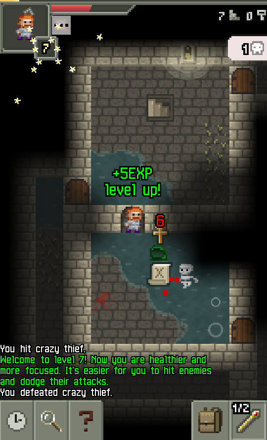

References / Software / 457
Pixel Dungeon
Oleg Dolya’s open-source roguelike draws its dungeon, its hero, and its whole interface, from health bar to message log, in coarse enlarged pixels.
- Source
- GitHub: watabou/pixel-dungeon
- Creator
- Oleg Dolya (Watabou)
- Made
- 2012; source published 2014
- Style
- Pixel Art (agent-proposed, not yet reviewed by a person)
- Moods
- Game-like, nostalgic, crisp
- Evidence
- Inspected the developer’s screenshot
level_up.pngas copied to Wikimedia Commons, Screenshot of Pixel Dungeon.png, 540 × 888 px. Android version, floor 7. - Reviewed
- Rights
- Open license, stored. License: GPL-3.0. Rights policy

Context
Wikipedia calls Pixel Dungeon a 2012 roguelike indie game by Oleg Dolya, first for Android, and says that it is open source and that many games build on its code, most notably Shattered Pixel Dungeon. Wikipedia.
The GitHub repository, created in July 2014, describes a “Traditional roguelike game with pixel-art graphics and simple interface” and carries the GPL 3.0 license. GitHub.
Observed
- A top-down dungeon of gray stone tiles and dark water on black, with wooden doors and a staircase sign on the walls.
- The hero is a small sprite with red hair and a gray tunic. A skeleton, a green bag, and a scroll lie near him.
- Text is set in a bitmap face: “+5EXP level up!” in green over the map and a message log in white and green at the bottom.
- The top bar has the hero portrait in a square frame, a red health bar with a stepped end, and white pixel counters at the right.
- Square gray buttons at the bottom hold pixel icons: a clock, a magnifier, a question mark, a backpack, and a quick slot reading “1/2”.
- A smooth, unstepped shadow darkens the map away from the hero and at the edges, and a soft glow surrounds a wall lamp.
Why it belongs
The game applies one pixel scale to the world and the interface, so the buttons, bars, and text belong to the same grid as the sprites.
The smooth lighting is a later technique laid over the pixel art. It is a branch from the strict 8-bit core, so the fit is partial.
Borrow
Draw interface buttons as square tiles with one pixel icon each, on the same pixel scale as the content.
Use two text colors in a log, one for events and one for system messages.
Measured
Machine-extracted by tools/image-traits.py on . Full measurement.
- Mean chroma
- 0.05
- Palette
- #000000 21%
- #1e1d1b 19%
- #3a3933 12%
- #565249 10%
- #828272 7%
- #354b4b 6%
- #49463e 4%
- #a9a490 3%


https://pixeldungeon.watabou.ru/screens/level_up.png. The game repository is licensed GPL 3.0. License: GPL-3.0. Open the image for full size.